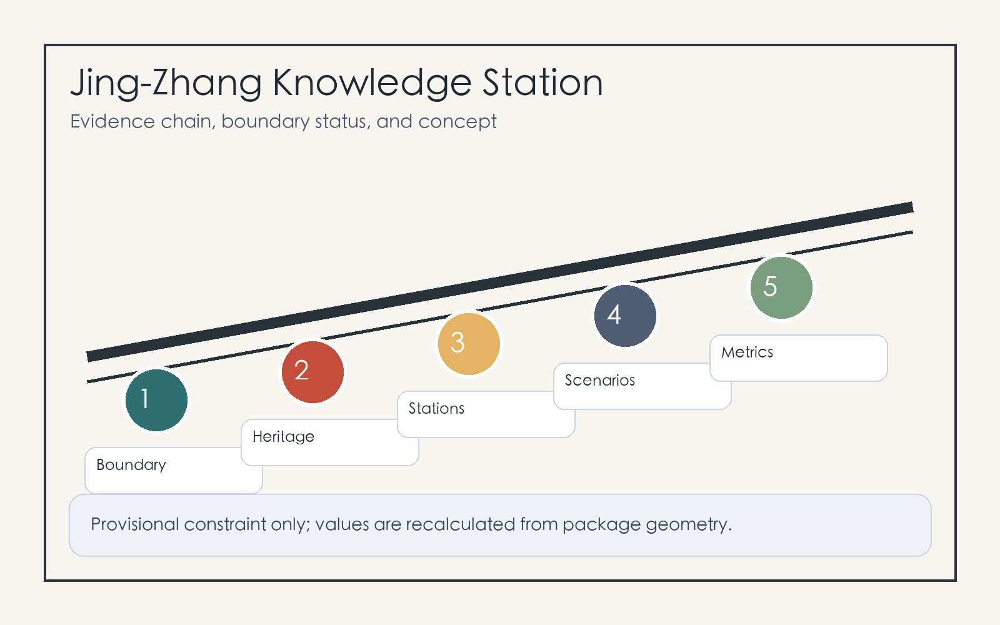
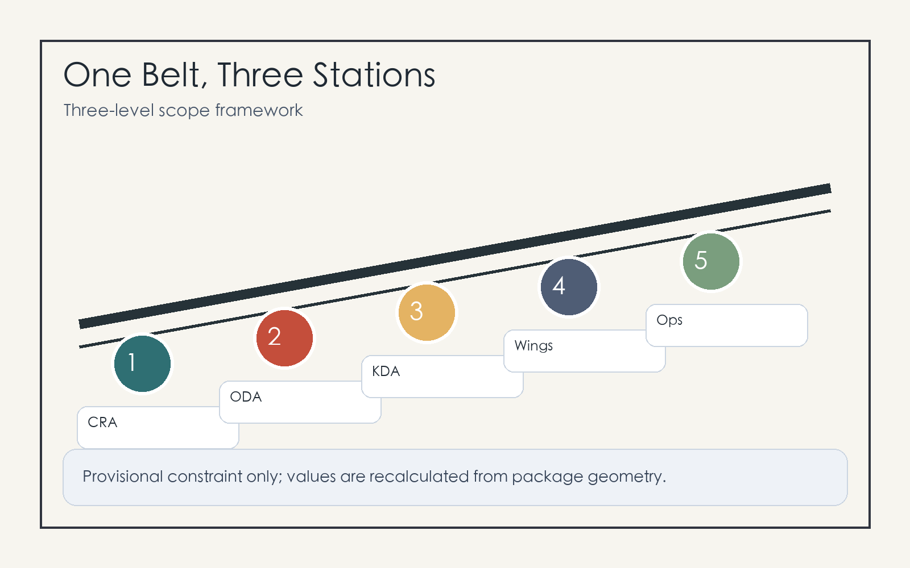
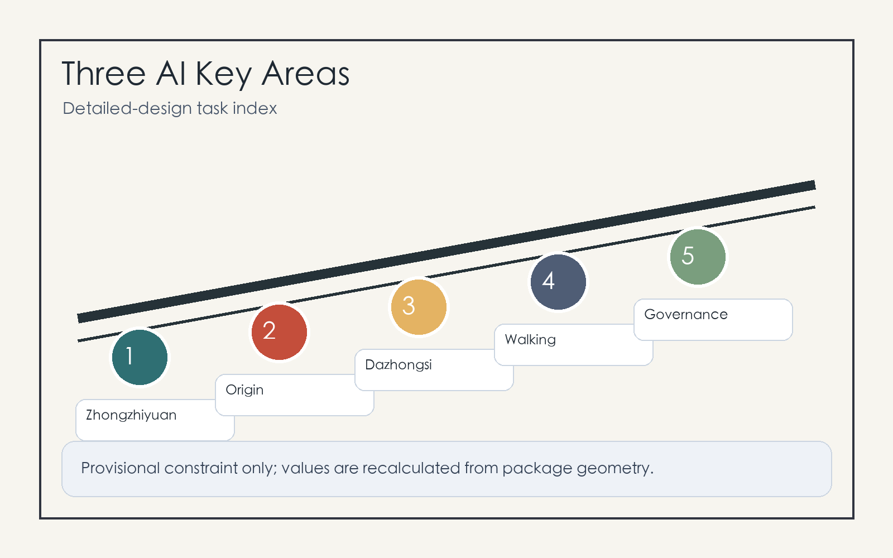

Jing-Zhang Knowledge Station: A Verifiable AI-Native Innovation Belt
The proposal uses the station as an organizing prototype, linking the Jing-Zhang Railway Heritage Park, three AI key areas, and everyday public services into a verifiable, operable, and recalculable AI Innovation Belt.
Jing-Zhang Knowledge Station: A Verifiable AI-Native Innovation Belt
Design Basis and Source List
This proposal treats the station as an interchange for knowledge, talent, models, data, and public services. The Jing-Zhang Railway Heritage Park provides the heritage spine, the three Key-Area Detailed Design Areas provide AI industry anchors, and nearby universities, companies, communities, and transit stations provide everyday users. The package follows the official announcement, site package, agent taskbook, and source registry, and does not present provisional geometry as an official redline 来源 来源 来源.
The current repository provides only provisional boundary and provisional key areas. They are used for generation, display, and self-check, not for approval, statutory planning, or precise area claims. Once official polygons are released, all geometry layers and metrics must be recalculated 空间数据 指标.

Three-Level Scope Framework
The three scopes are translated into a strategic concourse, urban platforms, and district gates: the Coordinated Research Area handles AI ecosystem and urban narrative, the Overall Design Area handles renewal, transport, infrastructure, public space, and metrics, and the Key-Area Detailed Design Areas handle Zhongzhiyuan, Beijing AI Origin Community, and Dazhongsi as areas for professional deepening 深度 标准.
The spatial structure is one belt, three stations, two wings, and multiple scenarios. The belt is the heritage walking and cultural spine; the three stations are the three key areas; the two wings connect Zhongguancun Technology Services Wing and Xiaoyue River Scenario Enablement Wing; the scenarios place AI+ mobility, education, healthcare, commerce, enterprise services, and civic governance into auditable urban interfaces 空间数据 深度.

Coordinated Research Area: Industry and Future City Research
The identity is “Jing-Zhang Knowledge Station.” The logo concept combines railway gauge, model nodes, and open brackets: two parallel lines for the Jing-Zhang legacy, three nodes for the key areas, and an open bracket for open-source collaboration. The identity avoids uncleared company marks and uses station signs, wayfinding, contribution walls, and event tickets as public media 来源 标准.
The ecosystem references six global patterns: Kendall Square, Station F, Toronto MaRS, Pittsburgh Robotics Row, Paris-Saclay, and Singapore Punggol Digital District. Haidian can translate them into six platforms: basic research, open-source collaboration, standards and safety, enterprise services, public experience, and international communication 深度.
Overall Design Area: Urban Renewal and Regulatory-Plan-Level Urban Design
The Overall Design Area advances through renewable blocks, verifiable scenarios, and recalculable metrics. It retains continuous public space and university-enterprise interfaces, prioritizes ground floors, underpasses, station edges, and walking gaps, and treats building intensity as pending official controls 空间数据 标准.
Renewal is staged as light activation, medium-term interface improvement, and long-term professional deepening. Official boundary, regulatory planning, ownership, infrastructure, and fire-safety data are prerequisites for any precise intensity or engineering conclusion 深度 空间数据.
Detailed Design of Key Areas
Zhongzhiyuan AI Independent Innovation Acceleration Area is the standards and safety governance station, with model safety display, standards workshops, low-carbon computing experience, and garden-like R&D exchange spaces 空间数据.
Beijing AI Origin Community is the open-source transfer station, linking campus, community, and park edges with an open-source release hall, IP services, talent services, night collaboration space, and contribution wall 空间数据.
Dazhongsi AI Industry Cluster is the intelligent-economy reception station, organized around transit-station integration, four-quadrant walking connections, an international demo room, agent and device displays, and a data-factor salon 空间数据 深度.

AI Innovation Ecosystem, Personas, and AI+ Scenarios
The five personas are open-source developers, startup teams, enterprise visitors, nearby residents, and university students and faculty. Each persona has a data boundary: no personal trajectory profiling, authorized enterprise data only, cleared campus and research data only, and human review for public-safety scenarios 空间数据 指标.
The ten scenario cards are open-source release hall, safety governance sandbox, edge-computing post, AI walking guidance, Dazhongsi international demo room, Qinghe low-carbon innovation corridor, near-campus transfer street, data-factor salon, AI daily-service street, and global AI event route. The three validation scenarios are walking-gap detection, enterprise-service booking and response, and public-event safety review 标准 深度.
Land Use, Building Scale, and Retain-Renovate-Demolish Strategy
Land use is expressed as a closed partition, not as statutory zoning. Building treatment follows retain usable space, renovate public interfaces, renew inefficient nodes, and freeze objects pending confirmation. Without ownership, fire, structural, and regulatory data, no demolition or new-build commitment is made 空间数据 空间数据 标准.
FAR, height, setbacks, and road redlines remain pending official conditions. The proposal focuses on spatial methods such as open ground floors, shared roofs, corner services, station interchange, green interfaces, and verifiable metrics 指标 深度.
Transport, Rail, Municipal Infrastructure, and Public Services
The mobility strategy combines transit interchange, heritage walking, and micro-circulation repair. Dazhongsi Station, Wudaokou, Qinghua East Road West, and North Fifth Ring crossing nodes are priorities for professional review 空间数据 深度.
Municipal and public-service facilities include edge computing, public Wi-Fi, event power, low-carbon energy, smart lighting, talent services, enterprise services, and conventional utility coordination. Missing utility, fire, flood, and energy-capacity data are treated as prerequisites 空间数据 深度.
Blue-Green Network, Public Space, and Urban Character
The blue-green network uses the Jing-Zhang Railway Heritage Park as a walkable spine connecting Qinghe, Xiaoyue River, university edges, company lobbies, and community life. The graphics emphasize corridors, stopping places, developer walks, open-source exhibit galleries, and agent contribution honor walls rather than the provisional polygon itself 空间数据 深度.
The three AI pilgrimage landmarks are the Tsinghua Yuan memory and open-source milestone wall, the Beijing AI Origin contribution station, and the Dazhongsi international agent demo court. The cultural narrative has three acts: railway self-strengthening, Zhongguancun innovation, and AI open-source co-creation 标准.
Renewal Projects, Implementation Policy, and Phasing
The six project packages are heritage-park walking-gap repair, Zhongzhiyuan Qinghe innovation interface, Origin Community near-campus transfer street, Dazhongsi four-quadrant walking connection, AI public service and edge-computing nodes, and global AI event route. Near-term work uses pilots and operations; medium-term work improves public space and ground floors; long-term work waits for official planning and engineering data 空间数据 深度.
Long-term operation follows an annual theme, quarterly validation, and monthly open day: global AI urban week, quarterly scenario tests, monthly open-source release and resident feedback sessions. Each cycle records sources, authorization, risk, public feedback, and revisions 来源 深度.
Metrics, Area Recalculation, and Compliance Matrix
Metrics are divided into directly recalculable geometry metrics, pending official controls, and operational performance metrics. Known values live in metrics.json; gaps live in assumptions.json 指标 指标 深度.
The compliance matrix covers announcement tasks 1.3, 1.4, 1.5 and agent.1 through agent.6, linking every task to sections, layers, metrics, drawings, HTML, self-checks, and data gaps 标准.
Risk, Copyright, and Compliance
The main risk is misreading provisional geometry, conceptual projects, or operational ideas as official redlines, approval conclusions, or implementation commitments. The package repeats provisional status in proposal, HTML, sources, assumptions, and self-check, and lists regulatory planning, ownership, utilities, fire safety, heritage, traffic modeling, and public participation as prerequisites 来源 深度.
Figures are generated from local package data and local drawing code. The package uses no remote images, map tiles, scripts, fonts, iframes, forms, APIs, or tracking. AI scenarios require data minimization, authorization, explainability, human review, and stop rules 空间数据.
References
- brief/site-package/design_brief.json
- brief/site-package/agent_taskbook.json
- brief/site-package/allowed_design_space.json
- data/source_registry.json
- data/processed/agent_fact_pack.md
- docs/formal-submission-guide.md
- docs/terminology-glossary.md
- Structured indexes:
sources.json,metrics.json,compliance_matrix.json,standard_matrix.json,design_depth_matrix.json来源